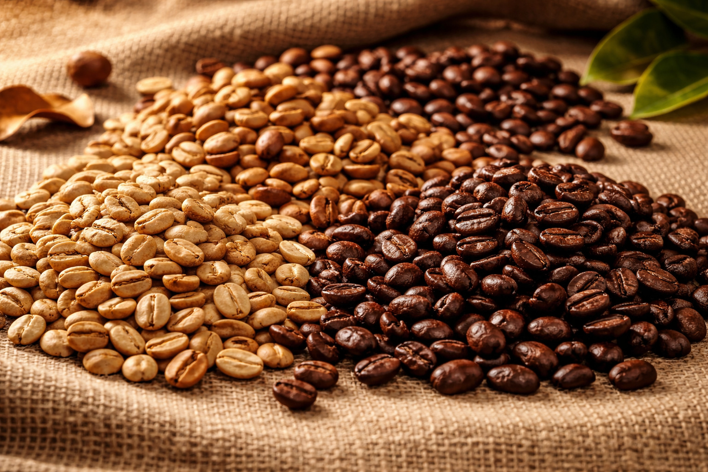

Tipos de café
Existen numerosas variedades de café cultivadas en distintas regiones del mundo. Cada una tiene características únicas en sabor, aroma y cuerpo que las hacen especiales. A continuación, te presentamos las principales variedades:
| Variedad | Origen | Sabor |
|---|---|---|
| Arábica | Etiopía | Suave, dulce, con notas frutales y acidez media |
| Robusta | África Central | Fuerte, amargo, con cuerpo denso y más cafeína |
| Liberica | Filipinas | Aroma floral, sabor ahumado y afrutado |
| Excelsa | Sudeste Asiático | Ácido, afrutado, con notas de tarta y cuerpo ligero |
| Typica | Yemen/Etiopía | Limpio, dulce, con acidez brillante y equilibrada |
